仙台大観音/宮城県仙台市泉区
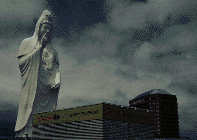 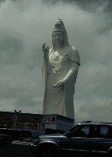 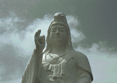
仙台駅からバスに揺られて30分。ここ泉区の中山は杜の都のイメージからはかけ離れテイストレスなニュータウンである。その一画（と言うか嫌でも中心地になってしまうのだが）にニューワールドセンターなるものがある。その真ん中に高さ100メートルの仙台大観音がいるのである。
大観音の横にはホテル、無論大観音より小さい。そして正面にはペットショップやスーパーなどがあり、地元の人達は窓の外に大観音いることなどまるで気にすることもなく、犬の餌や日用品を買っているのである。
シュールである。
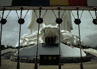 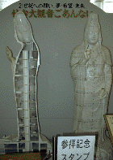 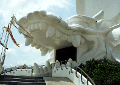
この大観音、右手に玉を持っているのだが、これ、パンフでは人々の願いを叶えてくれる宝珠となっている。
ちなみにコレ、直径3メートル、重さは34トンもある。
早速中に入ってみる。1階はお約束とも言えるぐるり十二神将めぐり。その後ちょっとグロい水子モノのジオラマを経て、いよいよ本丸の胎内巡りへ。
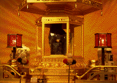 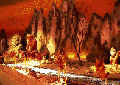
エレベーターで最上階へ昇るとまずは御心体を奉る部屋に。部屋中金ピカ。その中央にはこれまた金ピカの祭壇がしつらえてあり、そこには青いラピス石を台座にした金ピカの玉が納められていた。
気を取り直して下へ向かう、あ、ちなみに展望台みたいなものはあるにはあるが特に記する程のものではないので割愛。
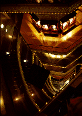 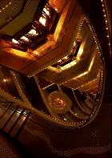 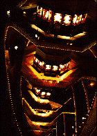
11階から下はエレベーターに乗った3階まで大観音の内壁に沿った螺旋階段で降りてくる仕組みになっている。そして中心の柱の周りには仏像がワンフロア12体、全部で108体配されていて、その部分を除くとあとは3階までの吹き抜けになっている。
一番上から吹き抜けを覗き込む。下の方は良く見えない位の高さだ。さすが100メートル観音。そして何より印象的だったのはこの吹き抜けに面した階段の縁がすべて電飾されていて、物凄い光の筒になっていることだった。なんか東南アジアあたりの超巨大ショッピングセンターみたい。しかもその吹き抜けに所々得体の知れない光ファイバー製のオブジェが吊るされており、ますますその感を強くしている。
ただしこっちはほぼ無人の空間。ブキッビンタンプラザやヤオハン（今でもあるのかな）なんかも人さえいなければこんなんかなあ、と思わせるところだ。
ま、それはそれとして荘厳＆スペ−シーな雰囲気でグッとくる。私が訪れた大観音ものの中でもかなり趣味はいい。
ただしこういうモノは趣味がいいのと面白いのは別モノなんだけどね。
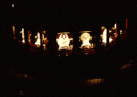 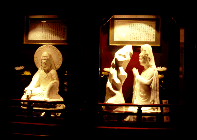
1998.7
珍寺大道場 HOME